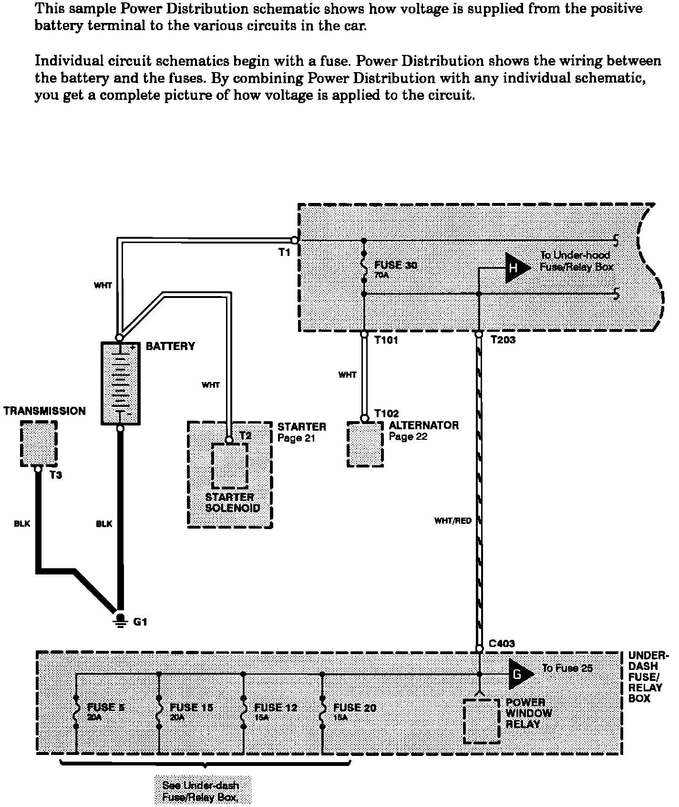

Operation CHARM
: Car repair manuals for everyone.
Home
>>
Acura
>>
1989
>>
Integra L4-1590cc 1.6L DOHC FI
>>
Repair and Diagnosis
>>
Relays and Modules
>>
Relays and Modules - Lighting and Horns
>>
Interior Lighting Module
>>
Diagrams
>>
Diagram Information and Instructions
>>
Key to Electrical Diagrams
>>
Power Distribution Schematics
Power Distribution Schematics
Power Distribution Schematics:
